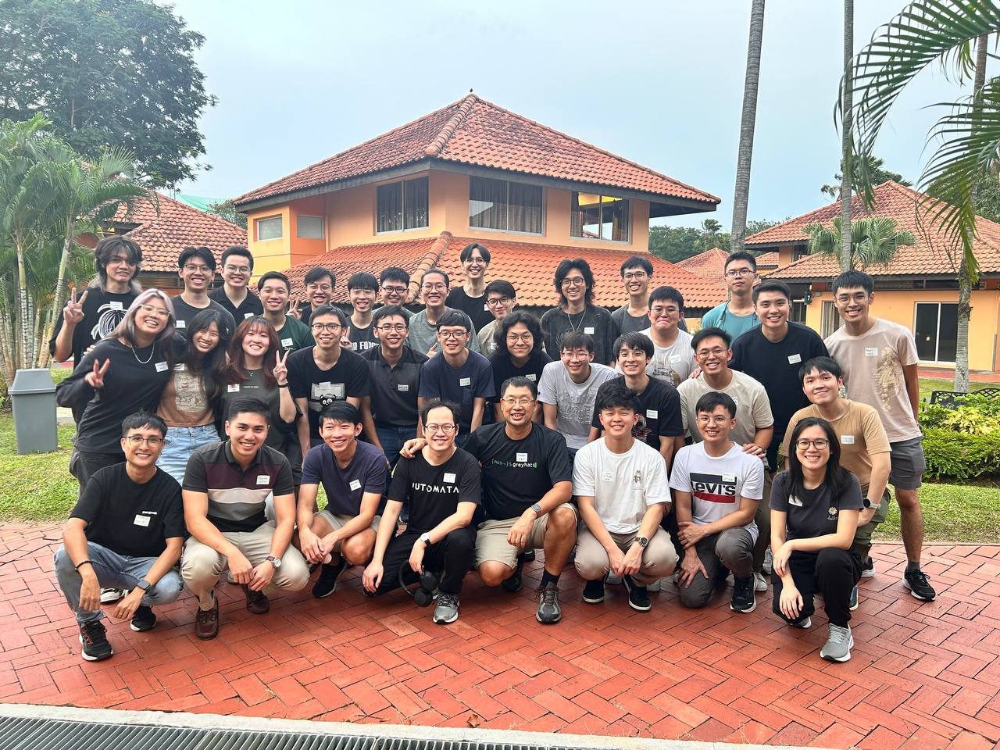

~ who are we? We are a group of NUS students (from computing, math, engineering) that share a common interest in cybersecurity, participating in cybersecurity (CTF) competitions together. We also believe in giving back to the cybersceurity community in the form of organizing workshops, talks and events to introduce the industry to people. ~ whats the commitment like? Our membership is only for existing NUS students, but our events are mostly open to all. We meet every Wednesday, 7pm to 9pm. Apart from our regular meetings, members are also expected to help out with organizing club events. (i.e. Security Wednesdays, Grey Cat The Flag, WelcomeCTF, HackBash)~ what's the difference between NUS Greyhats and NUS Hackers? NUS Hackers build things while we break things. The work they do typically revolve around programming and creating software to solve problems. NUS Greyhats specialize in identifying vulnerabilities and finding ways to exploit them.~ can i still join with zero experience? For sure! More than just cybersecurity experience, we value who you are as a person. We want people who have genuine interest in cybersecurity, willing to learn and grow with us. Beyond just techncial experience, we are also looking for people who are willing to give back with us and help us in running events. (we need people with artistic talents also T_T) < go back